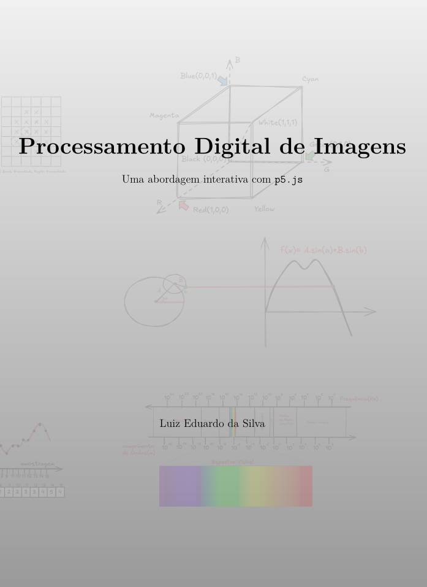

Processamento Digital de Imagens
Uma abordagem interativa com P5.js
Prefácio

Este livro não tem a pretensão de abordar em profundidade todos os temas relacionados ao Processamento Digital de Imagens (PDI). Trata-se de uma obra introdutória, cujo objetivo principal é apresentar os conceitos fundamentais da área de forma acessível e organizada, servindo como um ponto de partida para estudantes e interessados no assunto.
Nos capítulos seguintes estão reunidos materiais que foram desenvolvidos e utilizados pelo autor ao longo de vários anos em atividades de ensino. Esses conteúdos foram selecionados com base na experiência em sala de aula e correspondem ao conjunto de conceitos considerados essenciais para uma compreensão inicial do processamento de imagens. A proposta é oferecer uma visão clara dos principais fundamentos, acompanhada de exemplos e ilustrações que facilitem a compreensão.
Para um estudo mais aprofundado do tema, recomenda-se a consulta a obras clássicas da área, que tratam o assunto com maior rigor teórico e abrangência. Entre os textos mais conhecidos está Digital Image Processing, de Rafael C. Gonzalez e Richard E. Woods (Gonzalez e Woods (2010), Gonzalez e Woods (2018)), amplamente utilizado em cursos de graduação e pós-graduação. Outras referências importantes incluem Digital Image Processing de William K. Pratt e Fundamentals of Digital Image Processing de Anil K. Jain (Pratt (2007), Jain (1989)), entre outros (Sonka, Hlavac, e Boyle (2014), Szeliski (2022)), que também são obras tradicionais na formação de pesquisadores e profissionais da área. Essas leituras complementam e aprofundam os conceitos apresentados neste livro.
Este é o livro gerado apartir dos slides da disciplina de Processamento de Imagens. A geração foi realizada usando a ferramenta Quarto book com o auxílio do Chat-GPT 5.2, mas todo o conteúdo foi verificado e aprovado pelo autor.
Para aprender mais sobre Quarto book visite: https://quarto.org/docs/books.
Alguns exemplos do livro serão apresentados usando p5.js. A p5.js é uma biblioteca JavaScript de código aberto, inspirada na linguagem Processing, concebida para tornar a programação visual e interativa mais acessível. Ao abstrair a complexidade do desenvolvimento web, ela permite a criação de gráficos, animações e interações de forma simples e intuitiva, favorecendo tanto iniciantes quanto usuários experientes.
Por sua facilidade de uso e execução direta no navegador, a p5.js é amplamente adotada em contextos educacionais, visualização de dados e prototipagem, constituindo uma ferramenta especialmente adequada ao ensino e à experimentação em Processamento de Imagens, ao integrar programação, visualização e interatividade em um mesmo ambiente.
Exemplo de código embutido usando p5js:
Para aprender mais sobre p5.js visite: https://editor.p5js.org/about.
Para a apresentação e visualização de algumas equações e conceitos matemáticos, foi utilizado o software GeoGebra. Essa ferramenta permite explorar de forma interativa gráficos, funções e relações matemáticas, facilitando a compreensão de conceitos importantes apresentados ao longo do texto. O uso de recursos interativos contribui para tornar a visualização das equações mais clara e intuitiva para o leitor. Para saber mais sobre essa ferramenta e acessar seus recursos, visite o site oficial do GeoGebra: https://www.geogebra.org.
As figuras utilizadas neste livro foram construídas com o auxílio do Excalidraw, uma ferramenta de desenho vetorial simples e intuitiva, bastante adequada para a criação de diagramas e ilustrações didáticas. O Excalidraw permite produzir gráficos e esquemas com um estilo visual claro, favorecendo a comunicação de ideias e conceitos apresentados no texto. Mais informações sobre essa ferramenta podem ser encontradas em: https://excalidraw.com.